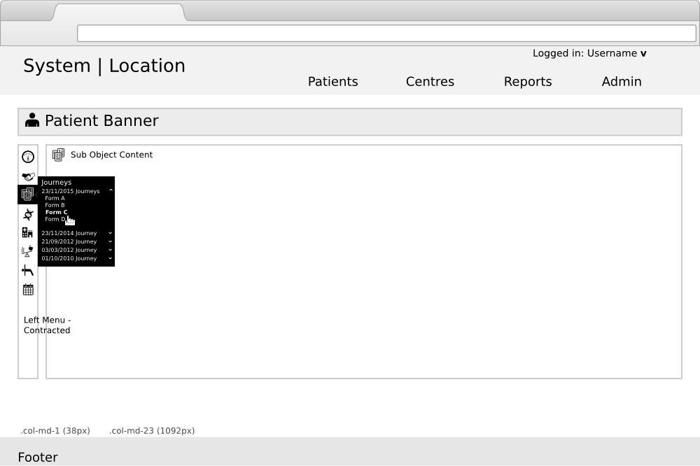
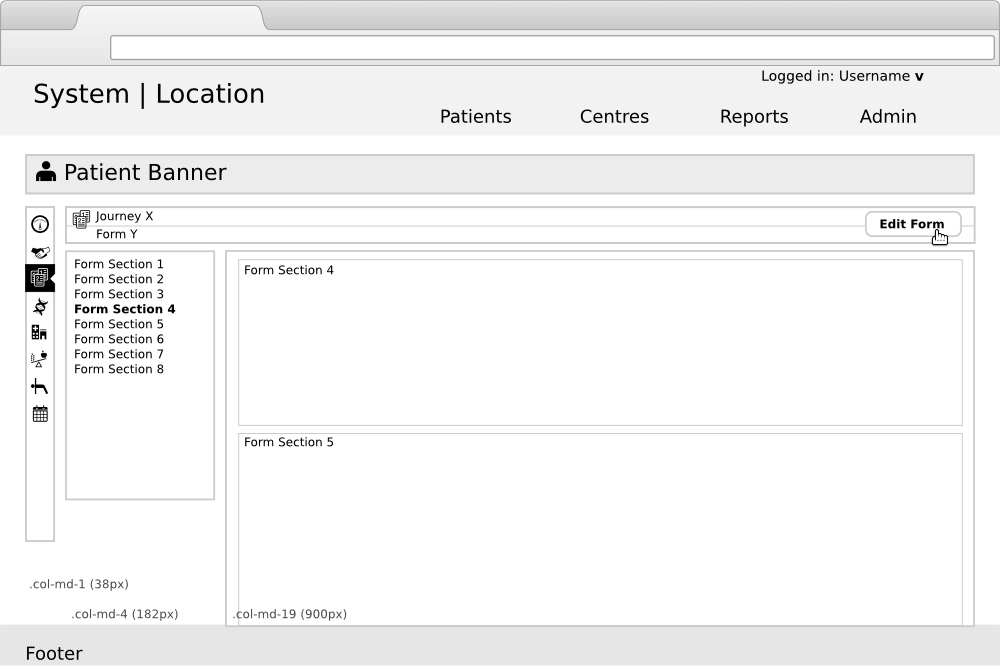

Clinical Insight
Overview of User Interface
Created by Turlough McAnespy
1 Pages Overview
Page Modes
Pages in Clinical Insight can be classified as View or Edit and this dictates which page type to use.
- View page - enables user to view a single object or multiple related objects.
- Action page - enables a user to add or edit a single main object or multiple related objects. Thses sit on a 'modal' level above the view pages & can only be accessed through the clicking of a 'Edit/Add' button. A user must commit a change (Save) or Cancel the action to return to the proceeding view page.
1.1 View Pages elements
- Page-level title (e.g. Object banner on object page or h1 admin section) - consistant with any navigation links to the page
- Section level title - section within a page (Optional)
- Form object panel - encompasses entire form
- Form object section panels - panel which sits within the form panel (Optional, + only ever 1 section panel deep)
- Form object section titles - for further dividing forms into sections without the use of panels (Optional)
- Add/Edit Button to allow the user to open up objects in the Action page modal (Optional)
- Side Menu - acts as both tab + navigation menu to everything under the context banner
1.2 Action Pages elements
- Object banner - exists for every object
- Tabs to navigate to other sections of the object (Optional.)
- Form object section panel/s - reflect the structure of the View page in the Action page (Optional)
- Form object section titles - for further dividing forms into sections without the use of panels (Optional)
- Close button to allow the user to close the Action page modal
- Save button - initially inactive (paired with 'invalid until ...'' message)
- Section Menu - for anchor linking to sections in a long form
- Horizontal Tab - ??? -
1.3 General Page layout
2 View Page layout examples

2.1 Generic View Page layout
2.2 View Page - contracted side menu
2.3 View Page - Form example with section menu
2.4 Action page - layout with Modal
2.5 View Page - edit only a section
2.6 Action page - previous values
2.7 View Page - edit a section of Dashboard
2.8 Action page - tabs of other sections
2.9 View Page - admin page full width
3 Page Types
- Landing Page - a page thats acts as an overview of a users view of the system (e.g. a cluster of information presented on a dashboard).
- Object Overview - when there is alot of information on an object a high-level summary of key info is appropriate (e.g. Dashboard, Table)
- Object Details - contains an exhaustive view of the object or element of the object.
- Primary Action - enables a user to add or edit a single main object or multiple related objects.
- Secondary Action - Contains a supplementary task directly related to the action page from which it originates and overlays.
3.1 Landing page (View)
A page thats acts as an overview of a users view of the system (a cluster of information presented on a dashboard). Functional Area.
3.2 Object Overview (View)
Sits as the top view of a single object when a high-level summary (macro) is appropriate. There can be only one per Object and the view should comprise of the minimum dataset to be clinically useful.
- Dashboard is most appropriate where there are a number of concepts which it would be useful to get a overview of (e.g. Patients medical overview)
- Table list view is appropriate when there are alot of sub-objects but within 1 concept (e.g. hospitals within a country, patients within a hospital)
3.3 Object Details (View)
A second view which shows the full dataset for the reference
Contains an exhaustive (micro) view of the object. Sits as the top view of a single object when a high-level summary is not needed
There may be a number of Object Details pages which can be navigated to by the use of a menu (frequently a set of Tabs)
3.4 Primary Action Page
The Action Page takes the form of a Modal window which is sits in a layer above the rest of the User Interface. The use of a Modal forces the user to focus on the single Action (e.g. filling in a form) displayed within the Modal.
Any upstream elements (navigation etc) can only be accessed by exiting the Action through clicking on an appropriate button - exit, save etc.
3.5 Secondary Action Page
Overlays the Action page from which it originates. This follows the same rules as the Primary Action Modal but is one step further removed from the main interface.
4 Objects
The various pages allow us to navigate up and down a series of objects and object groups, and to step into an Edit mode (permission permitted) at any point along that continuum. Each object may have a group of other objects associated with it. For example the objects in this list, are associated with the item that appears immediately above them.
- Country
- Hospital/Centre
- Patient
- Journey
- Form
Every object has an Object Banner and Icon to help with identification and reduce errors.
4.1 View Page layout areas
- Header
- System name/branding
- Location - hospital, admin etc.
- Logged in user
- System areas menu - patients, admin, reports
- Main - changes to reflect system area
- Page-level Title
- Left side menu
- Main view area
- Footer
5 Components overview
Each page is made up of a number of components. These can be broken into a number of different groupings
- Header Components
- Navigation Components
- Context Components
- Content Components
- Action Components
- Footer Components
5.1 Header Components
- System name/branding | Location
- Username logged in link - change role, edit, log out
- System area menu
5.2 Navigation Components
- Side Menu - The side menu provides the main navigation tool to access elements within an object (e.g. Patient, Hospital, System).
- Section Menu - A section menu sits inside a long Form (which requires scrolling to completely view).
- Horizontal Tabs - These are useful when there are a number of similar sections in object/area which can be view/editted in independance
5.2a Navigation Components - Side Menu
Side Menu - The side menu provides the main navigation tool to access elements within an object (e.g. Patient, Hospital, System). This needs to have a more sophisticated component than just a Vertial Tab menu as there will be a mix of different elements being accessed. For example the 'Demographics' section may be single constrained block of content. The 'Journey' section may contain an undefined number of Journeys each containing a bundle of Forms, createc on various dates by numrous different users.5.2b Navigation Components - Section Menu
Section Menu - A section menu sits inside a long Form (which requires scrolling to completely view). Primarily it provides a way to quckly jump to sections further down the page/form (a la wikipedia), but can also be used to give feedback on form completion and validity.5.2c Navigation Components - Horizontal Tabs
Horizontal Tabs - These are useful when there are a number of similar sections in object/area which can be view/editted in independance of each other. This may be unsuitable for the navigation within a single long form, but be useful within settings in an admin area.5.3 Context Components
- Object Banner (Patient banner etc.)
- Page Title
5.3 Context Banner
- Make most prominent element in UI
- At top of application window on View and Edit screens (both Primary and Secondary), in a fixed position unmovebale by user
- Display banner across the width of the screen
- Give more emphasis to the value rather than the label style
- A deceased Patient has a substantially different style
- Has 2 states - concise (default) and expanded
5.4 Action Components
These components are dealt with in detail in the next section. Fix it and then copy back here- Form input fields
- Floating Action bar - contains the Action buttons (error messages?)
- Form validation -
- Repeating concepts - e.g. add/edit a treatment of drugs
- Date/time picker
5.5 Content Components
- Table - list -
- Table - grid -
- Table - paragraph -
5.6 Pagination
5.7 Misc Components
- Login-in -
- Date/Time -
5.7 Footer Components
The footer should display basic contact information. The footer helptext component can display supplemental information related to the page content that is helpful and of interest to a user but not central to the task in hand. When this optional component is used, it is displayed only on landing and object overview pages. This component can be divided into section, may include links to other relevent information and is completely non editable by the user. Footer Helpdesk Icon When clicked, will trigger the Helpdesk popup for engaging with the Helpdesk team. Footer Help text All parts of a footer6 Action Components
- Form input fields
- Floating Action bar - contains the Action buttons (error messages?)
- Form validation -
- Repeating concepts - e.g. add/edit a treatment of drugs
- Date/time picker
6.1 Action Components - Form inputs
- The patient banner should always appear on (Patient) Action pages
- Forms should be seperated into clear sections with one or more inputs in each section
- Labels should be bolded to help differentiate from the values (sometimes values are long and would be hard to read if bolded). They should be a lighter colour than the default text colour to make them less prominent than the value text
- Optional help text should be provided below the form element
- Multi-page forms should be avoided when possible. A longer form with a section navigation aid is preferable
6.2a Action Components - Button elements
Each Action form should have at least 2 buttons including (preferably only) one Primary button- Primary buttons - e.g. (Save/Save & Close)
- Secondary buttons - e.g for closing the Action page without saving edits -
- Link (tertiary) buttons -
6.2b Action Components - Button elements
Closing the form without saving should provide a pop-up warning message if any information is going to be lost.
Expected Actions (especially) Primary buttons should be found to the right (e.g. Action bar) and other less expected buttons should be to the left of this, with sufficient padding make sure they aren't clicked by mistake.
Tabs a la ppm+ styleguide. We don't edit on the level of Patient as that requires us to carry the menu for the Patient inside our Active page using up real estate. These menus would be rarely needed as you don't navigate away during filling in a form
6.3 Action Components - Form validation
- Status
6.4 Action Components - Workflow
- Workflow
- Complete
6.5 Action Components - Current owner
- Current owner
- State
6.6 Action Components - Query notes
- Status
6.7 Action Components - Repeating concept - see below
6.8 Action Components - Date picker
7 Patterns
- Login-in -
- Add to Table - Repeating concepts - e.g. add/edit a treatment of drugs
- Date/time picker -
- Change View - Context switcher -
- Change View - List filter -
- Change View - View toggle -
Table - Add to Table
Add a new object inline (e.g. drug) Add a new object in new secondary action page (e.g. drug with a larger number of fields)Change View - Context switcher
The context switcher is a dropdown which provides a set of mutually exclusive selctions that when chosen will change the content on the page. Examples of where a context switcher may be useful include the changing of the Centre a manager with multiple rights has access to, or switching the date to see a previous form. A switch allows the user switch a set of information without leaving the view they are currently in. It may be inappropriate to use this component to switch to a different user.Change View - List filter
A list filter enables a user to refine the information that is displayed on a page or content region. (e.g. Data table list filter)Change View - View toggle
A view toggle enables users to alternate between different views of a content region. The view toggle provides different views of the same information (e.g. Patient details provided in grid or list formt. A day, week, or month view of a single calendar.)8 Form layout
Reuirements- De-couple the layout from the form elements
- Have layouts being controlled at different levels (page, section, field block, label, field)
- Allow fixed as well as reponsive layout classes
- Allow indentation on the Form question to relate hierarchical relationships between questions
- See OA Forms and OA Exmple Forms
9 CSS Components
In addition to the components that come with Bootstrap 3 we need- Context banner - (patient-info)
- Callouts
- Panels extended
- Tabs vertical - temporary use while we switch to new style left menu
- Section anchor menu -
- Datepicker